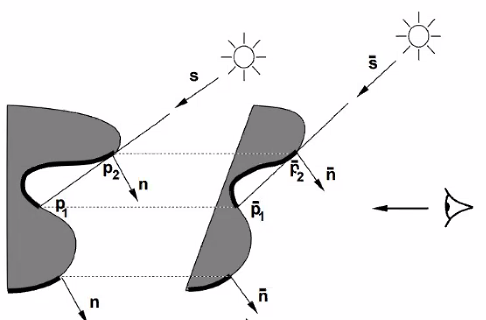
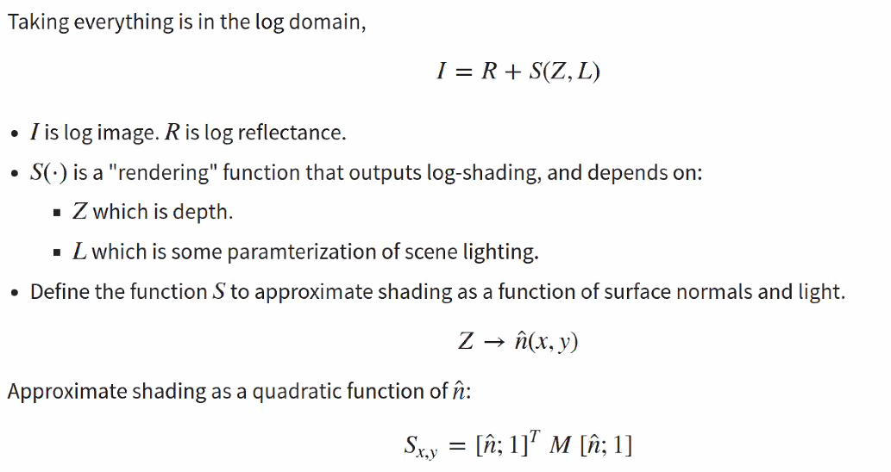
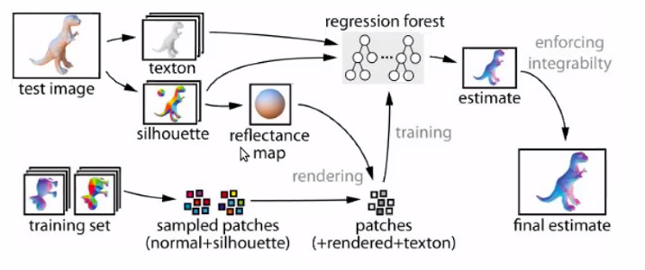
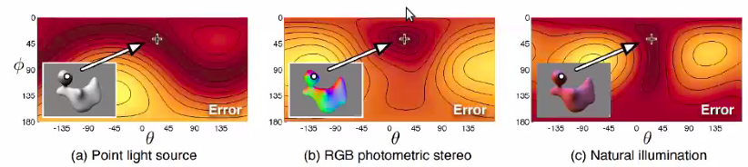

Note on Photometric Reasoning
Shape $\hat n$, lighting $l$, reflectance $\rho$ affect image appearance $I$. Can we infer them back? \(I=\rho<\hat n,l>\)
How much does shading and photometric effects tell us about shape, in natural settings.
GBR Degeneracy
Theoretical Analysis
- There is ambiguity from geometry. If you have $I,\rho, l$ for a pixel and want to infer $\hat n$. You know $\hat n $ up to a cone around $l$.
- What if we know these on a patch?
Assume the shape is a graph, $z(x,y)$. Can we infer the normal / depth map from image?
IJCV 1999 The Bas-Relief Ambiguity.
The Relief appears to be much deeper than they really are, showing that there is ambiguity ($z,z’$ ) from a single view image $I$!
A family of shapes that have the same appearance (and shadow) when you move light accordingly.
Assume a family of transform GBR linear transform parametrized by $\lambda,\mu,\nu$ \(z'(x,y)=\lambda z(x,y)+\mu x +\nu y\)
\[[x,y,z']=p'=Gp,\ G=\begin{bmatrix}1& 0& 0\\ 0& 1& 0\\ \mu& \nu& \lambda\end{bmatrix}\] \[\hat n'=G^{-T}\hat n\]Assume $\rho$ is same, then it could be absorbed into $l$ thus if $l’=Gl$, then
$\hat n’\cdot l’=(G^{-T}\hat n)^T\cdot Gl= \hat n’\cdot l$
Shadow
- Attached shadow: When the $\hat n$ turns away from light $\hat n\cdot l <0$
- Cast shadow: When one part of shape block light to the other part. $p_1\cdot l$

Need some albedo renormalization for exact same intensity. But changing human perception don’t rely on albedo that much, so you may not even need to match that!
Note: the GBR transformation is designed to work for any kind of image / shape. But even with known light and albedo, is there any degeneracy?
Local Shape Amibiguity
Ayan 2010
-
If it’s a planar surface, then the plane’s amibguity is the same as a single point (cone degeneracy.)
-
For curved surface, if it’s a quadratic form
Note, this quadratic form could always be diagonalized into $a_3==0$.
Then your surface normal is \(n_x = -\partial_x z =\\ n_y = -\partial_y z = \\ I = {l^Tn}\) General Quadratic case: 4 symmetric cases
- Flip across major curvature axis for light and curvature.
Cylinder Case: $a_1=0$ or $a_2=0$ one direction is planar, the other is curved
- If you know the light direction, then you know the shape.
Sphere Degenerate Case: curvature along 2 directions are the same, $a_1=a_2$.
However, if your lighting direction is aligned with your camera, then it’s still ambiguous in 4 ways.
Note this analysis is done within a quadratic family of surfaces.
Intrinsic Image Decomposition
\[I[n] = \rho[n]f(\hat n [n],L)\\ R[n]*S[n]\]Kind of decomposing pixel intensity into reflectance times shading.
Usage:
- Note, the decomposition can help recognition, and segmentation
- Useful for photo editting, only change one part of the vairable
Note, it’s hypothesized human performs intrinsic image decomposition, so we could perceive Adelson’s illusion, because we are perceiving the intrinsic property instead of pixel value.
Retinex
Assumption:
- The change of reflectance and shading don’t happen simultaneously!
- Reflectance is usually piecewise constant with sharp boundary! So it has larger gradient. We can set a threshold for it.
So the algorithm is super simple.
Compute gradient for image
Classify gradient based on amplitude, copy large gradient to $R$, small gradient to $S$
This method is very simple, but the philosophy is that naturally graident in $R$ and $S$ are different, So you can classify an observed gradient into one or the other based on the statistics of the gradient!
SIRPS
Note intrinsic image decomposition appears to be irrelavent to shape, but shading is generated from shape. So a prior on shading per se is ill posed, but prior on shape + lighting seems less ill posed.
So in later work, they decompose Shape + lighting as well, instead of pure shading.
PAMI 2015
Most powerful non nn way of decompose image, SOTA for a long time.

\(I = R+S(Z,L)\\ Z,L = \arg\min g(I-S(Z,L))+f(Z)+h(L)\\ R= I-S(Z,L)\) Their light is not encoded by a 3 vector, but as some parameters of spherical harmonics, simulating multiple light source and scene light. And the image from shading could be computed from a quadratic form.Their major contribution is
-
their design of prior.
-
Multi-scale optimization is used to solve this hard problem.
Prior
Reflectance
- Few distince reflectance value.
- Reflectance prior could be learnt from natural images using a GMM on 5-by-5 patches.
Shape
-
Prior on Hessian instead of pure $Z$ value or $n$ value.
-
Smoothness
Single Image Reconstruction in Scene
Note: The result of SIRFS is good only when there is a single object in the scene. With reasonable segmentation.
Just 2 changes
- Use nn to segment scene image into object.
- Learn the shape prior & Reflectance prior from this class of object specifically, instead of all images.
##
Deriving intrinsic images from image sequences ICCV 2001
If the images are ut from same reflectance but different lighting
Application
- Edit reflectance solely, and the image pattern will blend into the image
Retinex ++
Still classify gradients into different origin. But add a MRF to smooth it.
Assume illumination is of uniform color.
Shading is a single channel image, illumination is uniform color.
So the pipeline is
- Shading gradient
- $I[n_1]\propto I[n_2]$ then the color is the same but shading changes.
- This could be used as statistics to classify gradient.
-
Apply classifier on a patch (as context), classify if the pixel gradient is a shading one or a reflectance one.
- As this is a binary label classification (reflectance vs shading gradient), then the MRF can clean up your contour!
- Normally reflectance gradient is on the contour of image. So use MRF to let the reflectance label propagate along the contour instead of orthogonal to contour.
One reason that SIRF is better is it applys prior on shape instead of shading itself.
Shape From Shading
Local to Global
Estimate shape from local to global, break up your estimation into a hierachical way.
2012 Shape Collage
- Collect training samples, patch of shape and appearance
- When you have a new image, find key points, crop the patches
- Go back to search the ground truth shape for the patches.
- Try to merge them up.
- Fit the surfaces to the averaged gradient
2015 Shading to Local Shape.
- Multiple explanation for each local patch, with different cost or posterior probability or unary potential.
- To parametrize these guesses, use the angle $\theta$ between the major normal $a_4,a_5$ and the light direction to parametrize your solution
- Finally, optimize competing between the global depth map (global coherence) and the local compatibility
- Optimizing $Z$ directly can solve integrability automatically.
- Note: don’t know albedo is not a big deal. You can assume the brightest point in your lambertian image is $<n,l>=1$
Note you could also iterate through your lighting direction (if it’s a directional vector. ), it’s 2d if it’s just an vector then you can iterate.
But general lighting is hard to do so.
Silhouette contains the illumination information:
- You can get a rough estimate of shape from the silhouette.
- And you can use that to get an rough estimate of light info.

Using your illumination map,
As you are doing
CVPR 2015
Shape reconstruction is usually not that time bounded. esp. like image to 3d shapes.
Color in SfS
Multiple color can help you! (cf. Retinex ++ )
Esp. multiple light source with different color from different direction can uniquely determine normal & shape.
- Essentially you are doing multiple photometric stereo in one image.

2011 CVPR Shape estimation in Natural Illumination
Natural illumination is good! Make you less ambiguous… really?
Note if your surface albedo is unknown and spatially varying (has color patterns in it. )
Local constant albedo will help you!
Chakrabarti 3DV 2016
Learning Based Intrinsic Image Decomposition
Hardship is how to provide the supervision. Several solutions below.
Datasets for Intrinsic Image
ICCV 2009
Very painful, but it’s a great breakthrough! Benchmark for intrinsic image. However, the dataset is small, and not
Intrinsic Image in the Wild
Similar to surface normal idea.
Don’t collect dense label, but sparse supervision - pairwise relationship (this part has lower reflectance than that one.) from human being 44

Reflectance and image could be decomposed!
ICCV 2015 Learning Ordinal Relationship for Mid Level Vision.
Let a neural net provide human response. And then use optimization to interpolate between them. Idea is
Photorealistic Rendering for GroundTruth
2018 ECCV CGIntrinsics Network.
You may overfit the statistics of CG instead of synthetic. So they used a mixed training schedule instead of pure CG.
- Real image, output ordinal relationship and loss.
- Synthetic image, output dense map, L2 loss.
Note for these problems, collect the dataset is much more expensive then training! Making scene and rendering is most labor intensive part in the pipeline.
Similar to the depth and optical flow, they abolish the optimization instead of
Self Supervision
Single Image Intrinsic Decomposition without a SIngle Intrinsic Image
\[\; \|I_1-R_jS_1\|\\ \; \|I_i-R_iS_i\|\]Core idea is, the reflectance is constant ~ physics. Shading is caused by lighting and imaging. So using multiple lighting for the same scene will give you this idea. Practically it’s simply turn off a light and on the other.
However, note that self supervision will result in cheating sometimes. $R_i=1$ will result in a trivial solution (no decomposition at all!)You need regularization to avoid trivial solution.
- Retinex loss: Shading and Reflectance will not have large gradient at the same location.
- Diversity loss:

For these hard to find ground truth, Some thoughts on how to get supervision
- Render image as ground truth
- Let human to provide sparse labelling and supervision.
- Use some knowledge of physics as training (constancy of certain property across scene and setting.)
Advanced Photometric Stereo
Lambertian surface is not a valid model for many situations.
Di-electric Model: A lambertian component and a specular light component. \(I = \rho \hat n^Tl +\alpha(n)\)
Note, specular light will have the same color as the light source under di-electric model. If you know the light color, then you can project the color image in a clever way to throw away this component.
Polarizer
- Polarizer Physics
- Diffuse reflection will have uniform reflection
- Specular reflection will have same reflection with the source of light.
- Thus the image looks like a lambertian surface under Polarizer light.
Color
If you know your light color $L$ \((\rho\circ L)\) THen you can create a vector in the null space of light color

General BRDF Photometric Stereo
Dictionary Based Approach for Estimating SHape and Spatially Varying Reflectance. ICCP 2016
Still have multiple images under multiple light directions.
General BRDF is a function $\rho(\omega_i,\omega_o)$ ,
But we have a bunch of possible BRDFs like a dictionary, and each pixel is a linear convex combination of those materials. ()
They discretize the normal vector into per deg.
So now you are estimating a material definition $c^m[x,y]$ and normal definition $\hat n [x,y]$
Near Light source
This relax the parallel light assumption.
Illumination Estimation
Outdoor Illumination
Train a network to estimate the environment map / Illumination map from an image!
Note outdoor illumination is usually simple! There is sun + few sources
- Estimation is
Panorama is a good source of dataset
- You usually have a location of sun! (Sun detecture is not hard)
- You have your viewing angles, so you have the light source relative angle to your image.
THere is only one sun, but not one light in the room.
Learning to predict indoor illumination from a single image.
Environment light encoding can be done through making a segmentation on sphere, the activation value for each angle on sphere can denote the light strength.
Color Constancy Problem
a.k.a White Balance Problem
White patch, grey world priors. (doesn’t work well in normal settings. )
You can discretize the chromaticity $R,G,B>=0,R^2+G^2+B^2=1$ , then you could use do classification onto discretized values.
2015 predict chromaticity from luminance
- Predict true chromaticity from a grey pixel.
- Then divide the apparent color by true chromaticity, then you get the illumination chromaticity.
Convolutional Color Constancy. 2015
Spatial Varying illumination
Flash-Non Flash Pair
A formulation of multi light source image \(I[n]=\rho[n]\circ (l_1\alpha[n]+l_2\beta[n])\) If you have a flash with known color \(I[n]=\rho[n]\circ (l_1\alpha[n]+l_2\beta[n]+l_f\Delta[n])\) Then you will get the intrinsic color $\rho[n]$ and shading caused by flash.
$\rho[n]\Delta[n]$ .Note the chromaticity of this map is the same as image.
Flash is estimating intrinsic chromaticity!
Regression loss may not be best
Note, flash is limited. The object could not be too far away, the relative intensity should be adequate, or noise will submerge the information.
Train a network to predict chromaticity
You can use